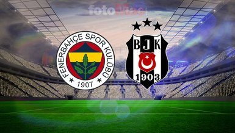
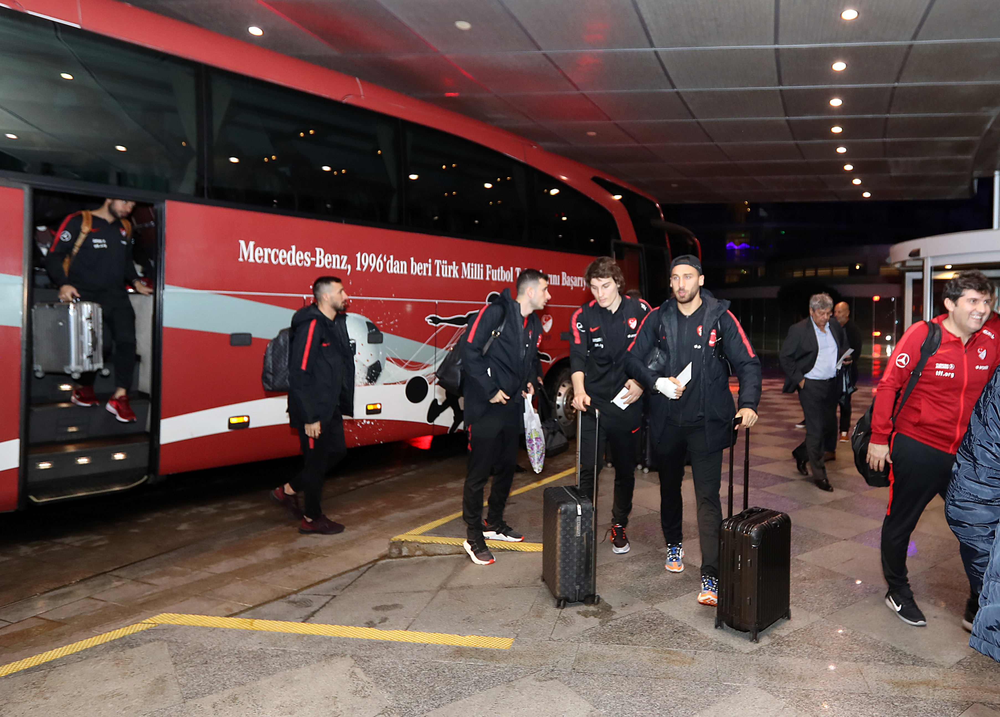
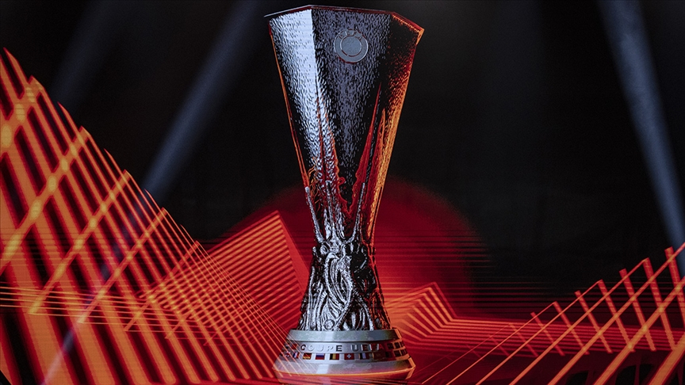

Spor Haberleri

24 Aralık 2025 • Spor
👁 42.981
Derbi Günü: Büyük Maç Öncesi Nefesler Tutuldu
Taraftarlar dev karşılaşma için saatleri sayıyor.

24 Aralık 2025 • Spor
👁 31.204
Milli Takım Antalya Kampına Girdi
A Milli Takım eleme maçlarına hazırlanıyor.

24 Aralık 2025 • Spor
👁 28.517
Basketbol Ligi’nde Haftanın Sonuçları
Liderlik yarışı kızışıyor.

24 Aralık 2025 • Spor
👁 22.906
Avrupa Kupalarında Türk Takımlarının Haftası
Temsilcilerimiz sahadan puanlarla döndü.
24 Aralık 2025 • Spor
👁 19.388
Genç Sporculardan Uluslararası Başarı
Türkiye’ye madalyalarla döndüler.

24 Aralık 2025 • Spor
👁 16.742
Süper Lig’de Transfer Hareketliliği Başladı
Kulüpler kadrolarını güçlendiriyor.